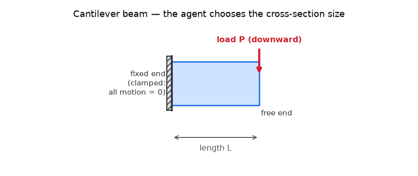
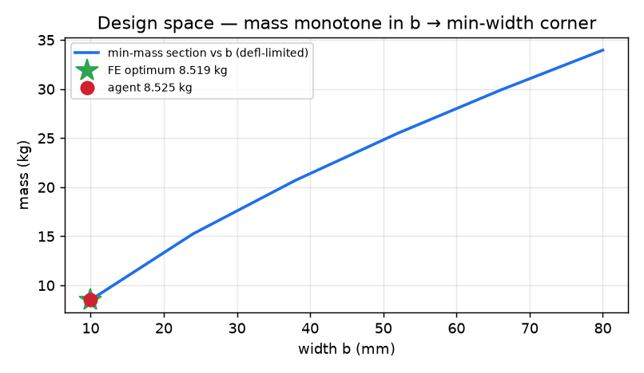

Choose a cantilever's cross-section to minimize weight under deflection and stress limits.
Can the agent design a part, not just analyze one? It must choose the cross-section dimensions of a cantilever beam to make it as light as possible while still meeting limits on how much it bends and how highly it is stressed — running the loop itself: propose dimensions → build the mesh → simulate → check the limits → revise.

Same cantilever as Trial 1; now the cross-section width and height are the variables the agent optimizes.
| Structure | Steel cantilever, length L = 1.0 m, rectangular cross-section |
| Design freedom | Width b (10–80 mm) and height h (10–200 mm) — the agent picks these |
| Goal | Minimize mass (= density × length × b × h) |
| Limits (constraints) | Tip deflection ≤ 3 mm (checked by simulation) and bending stress ≤ 200 MPa |
| Load | Downward tip force P = 2000 N |
Mass of the agent's final design versus the true optimum found by an independent brute-force search, plus an independent re-check that the design actually meets the deflection and stress limits. A subtlety the agent must discover: stiffness-per-mass favors height, so the lightest design pushes width to its minimum — a non-obvious “corner” answer.
Agent's final section (b=10 mm, h=108.6 mm) — deformed, σ_Mises — drag to rotate, scroll to zoom. Static fallback: PNG.
warp ×50.24 (peak deflection 3.0033 mm) · σvM 2.00–102.22 MPa · 3441 nodes / 640 elems

Mass falls as width shrinks, so the optimum pins width at its 10 mm minimum — the non-obvious corner solution the agent found.
| mass above FE-true optimum | +0.073% FEASIBLE |
| found min-width corner | YES (b=10.0 mm) |
| FE deflection on check mesh | 2.993 mm ≤ 3.0 mm |
| FE designs evaluated | 3 |
| pass@10 (opus, headless) | 100% feasible · best +0.027% · mean +0.104% |
| no peeking at the answer | CLEAN the agent's own files never read the stored answer or grader |
Independently re-graded on a fixed n=8 mesh; the agent derived the min-width corner from a stiffness-per-mass argument and closed the FE loop (shear vs EB).
| agent | Here, an AI agent: the large language model does the engineering work itself — writing the solver input, running it, reading the results, and deciding the next step — instead of a human driving the tool. |
| cantilever | A beam fixed rigidly at one end and free at the other (like a diving board). |
| FEA | Finite Element Analysis — a numerical method that splits a structure into many small “elements” and solves for how it deforms and where it is stressed under load. |
| pass@k | Run the agent k independent times; report how often it succeeds — a reliability measure. |
experiment folder on GitHub — README, config.yaml, results/, agent transcripts & authored code.
{kind=link}